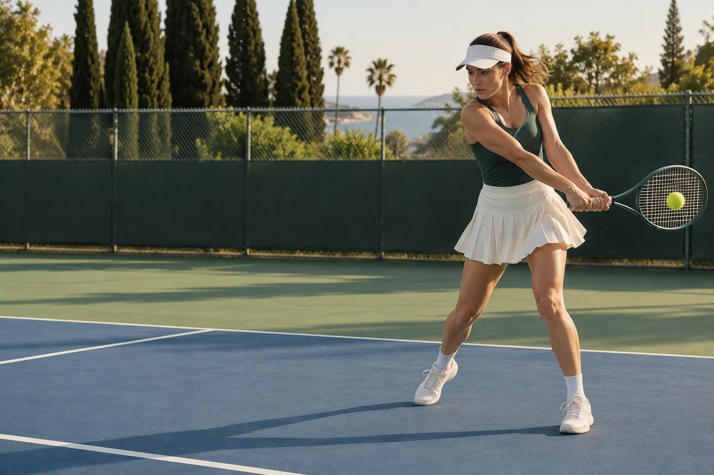

01 / AUTO RALLY CLIPSEVERY RALLY. CLIPPED.
Skip the downtime. Acecut separates your rallies so you can find your favorites without scrubbing through the whole match.
AI TENNIS HIGHLIGHTS FOR IPHONE.
Turn tennis match videos into rally clips and highlight reels. Less editing. More tennis.
BUILT AROUND YOUR GAME.
You put in the court time.
Let Acecut take care of the highlights.

01 / AUTO RALLY CLIPSSkip the downtime. Acecut separates your rallies so you can find your favorites without scrubbing through the whole match.
That serve deserves more than a point on the scoreboard. Find your ace moments, save the clip, and keep the proof.
Bring your best rallies together with AI editing. Choose the length, add music, and make a reel that's ready for the group chat.
Add a visible ball trail to your video. Show the arc, the placement, and why that shot is worth watching twice.
Product visuals are illustrative.
THE COURTSIDE CONVERSATION.
That rally was too good to leave in a one-hour video.
I finally hit that serve. Of course I want the clip.
Same time next week? I'll bring the highlights.
One clean winner. Straight to the group chat.
The score won't tell you how good that rally felt.
Some shots deserve a second look. And a third.
Less time looking for the shot. More time playing it.
Not every point is perfect. Some are still worth keeping.
FROM THE COURT TO THE CLIP.
Make a tennis highlight reel from match footage: select complete rallies, trim clips, add music and review your export with AceCut.
Record clearer tennis footage with a fixed camera, a full-court view and a short test clip. Prepare match videos for rally clips and highlights.
Learn how a tennis ball tracer adds a visible trail to video, when to use it in a highlight reel and what to check before sharing with AceCut.
BEFORE YOUR NEXT MATCH.
Automatically separate your tennis rallies, find and save ace moments, create AI highlight reels, and add a ball tracer. Then save your video or share it to TikTok and IG Reels.
Find Acecut on the App Store and import a tennis video. Browse your rallies, select one or several, adjust the clips, and create your edit with music and a ball tracer.
Use a fixed camera behind the baseline with the full court visible. Stable, clear singles footage is the starting point. Keep the camera still and avoid blocking the ball.
Yes. Select a single moment to save as a clip, or choose several to build a highlight reel. You can adjust the start and end of each clip.
Choose a 30- or 60-second AI edit, turn music on or off, and choose whether to add the ball tracer before exporting.
Acecut focuses on your videos: rally clips, ace moments, highlights and ball tracer. It is not an official line-calling or match-officiating system.
MADE FOR THE LOVE OF TENNIS.
More court time.
Less editing.